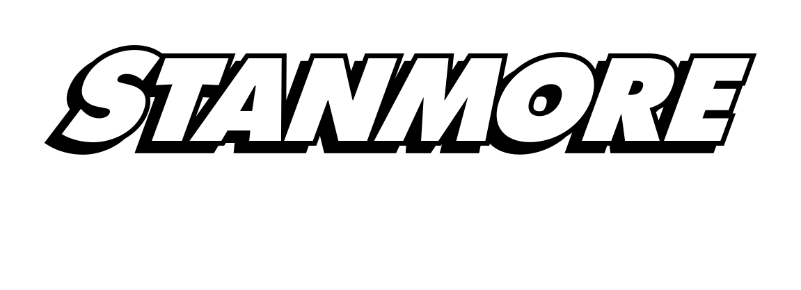
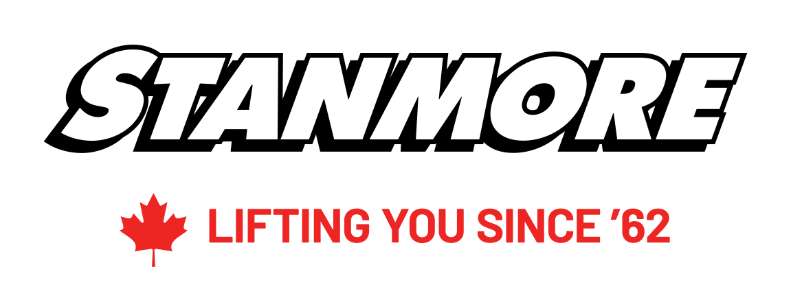
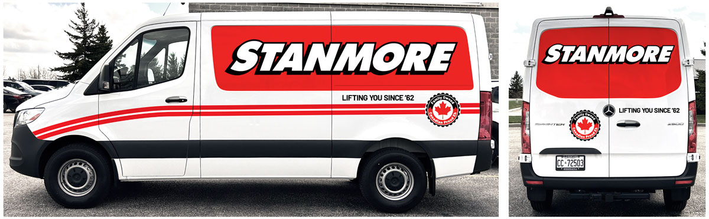
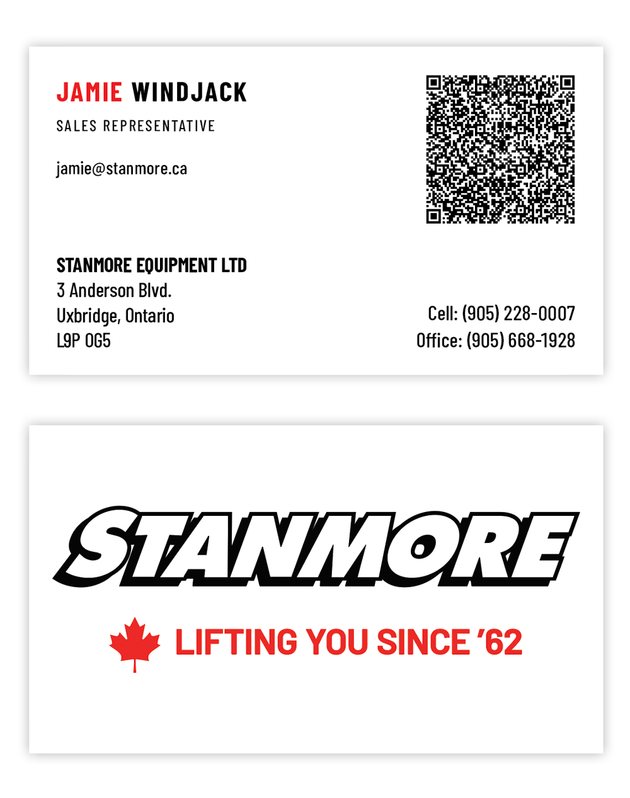
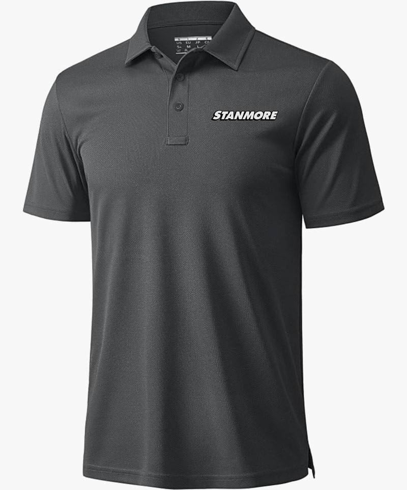
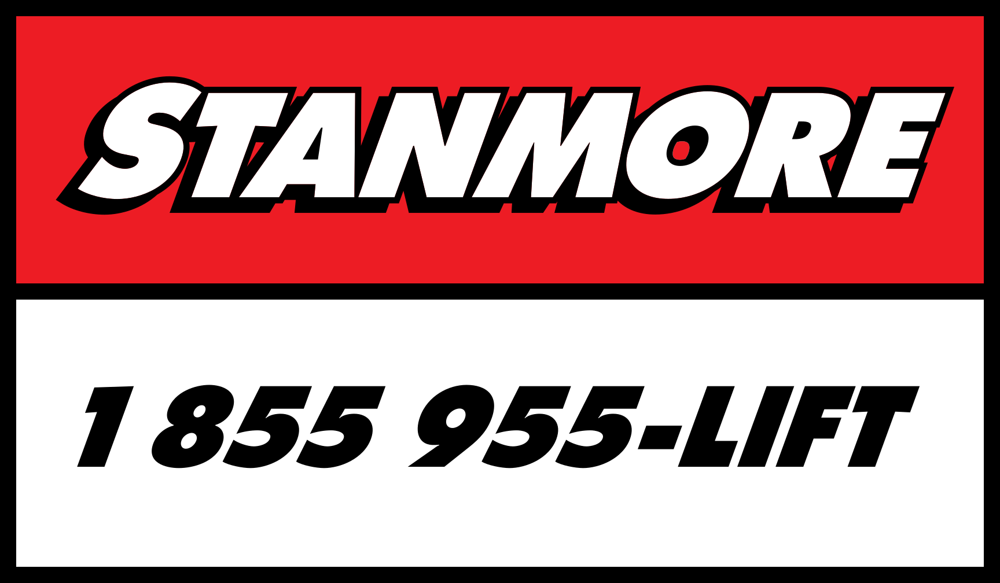

Rules for applying the Stanmore identity across print collateral, vehicle and equipment decals, and trade show graphics. Written for internal staff and for the print vendors producing the work.
The wordmark is the mark. It is drawn artwork — white letterforms with a black keyline — and one file covers white, black and Stanmore Red grounds, so there is no separate reverse version to manage. A tagline lockup and two one-colour versions cover what the primary file cannot. Legacy artwork stays in circulation on existing stock and equipment until it is replaced, but never appears alongside the new mark in a single piece.
The wordmark on a light ground. This is the mark for covers, cards, flyers and spec sheets — the standard in every case where nothing forces otherwise.
The same file, unchanged. The white letterforms carry the mark and the black keyline reads as depth instead of disappearing, so black, Stanmore Red and dark photography all take the primary artwork.

The tagline is locked to the wordmark in the supplied file — the maple leaf, the spacing and the cap height are all fixed. Scale the lockup proportionally as a single object; never move, re-space or redraw any part of it, never separate the leaf from the tagline, and never rebuild it by setting the tagline under the plain wordmark.
Take the light-ground version on white, and the dark-ground version on black or over dark photography — the tagline is solid, so unlike the wordmark it does need the matching file. Use the lockup on covers, vehicles, booth panels and the back of the business card — anywhere it sits on a face of its own. Keep it off faces carrying contact information, where it competes for attention. Where the tagline is not wanted, take the plain wordmark rather than deleting the tagline from this artwork.
Solid black, no keyline. Invoices, forms, single-ink print and any black-only run.
Solid white, no keyline. Embroidery, cut vinyl and engraving on dark material — anywhere the process cannot hold the keyline.
Clear space on all four sides equals half the wordmark's overall height. Nothing enters that zone — no type, no rule, no photo edge, no fold or trim.
Below these sizes the black keyline starts to fill in and the counters close up. If the space will not hold the minimum, move to a larger format or drop the mark from the piece — never shrink it past this.
Red against the black outline is too low in contrast to read at distance. Keep the white fill.
Three core colours carry the brand. Red is the accent and the attention-getter, never the reading surface. Two neutrals exist only to support layout — rules, panels, secondary type.
Red is the one colour worth a press check. Match to PMS 485 C on every process, and hold the same red across print and vinyl so a card and a truck door read as the same company.
The wordmark is a heavy slanted condensed grotesque. The brand pairing extends that logic rather than competing with it: a condensed face for headlines and equipment labels, its normal-width sibling for body copy. Both are free, licensed for print and embedding, and installable on any staff machine.
Stanmore has been lifting you since '62. Rough terrain forklifts, telehandlers, scissor lifts, scaffolding and mortar mixers, rented and sold across Ontario.
The wordmark carries every piece on its own. Give it a clean ground — white, black, or a solid red panel — size it to the format, and keep everything else outside its clear space.

Vehicle wrap. A red panel carries the wordmark across the cargo side, reversed out so the white letterforms and the black keyline both hold against the red. The tagline sits in black on the white below the panel with the crest to its right. Red stripes sweep up off the front fender and run the length of the body, passing below the panel rather than across it. The rear doors take the same panel at a smaller scale.
A secondary mark for occasional use. It supports the wordmark and never stands in for it — no piece is identified by the crest alone. Approved use today is the vehicle wrap only, where it sits on the white below the red panel, clear of the wordmark.
Keep it reading as a stamp rather than a second logo: no wider than a third of the wordmark it accompanies, and never locked into the mark or inside its clear space. Never recolour it, never separate the leaf from the ring. Anything beyond the vans goes past the marketing contact first.

Front runs white and carries contact only — first name in red, surname in black, role in letterspaced caps below it, then email, and the company name and address at the foot. Phone numbers align right and a QR code sits in the top corner. No mark on this face.
Back is white and carries the tagline lockup centred, and nothing else — no contact type, no partner marks. The two faces split the work: contact on the front, identity on the back. Where partner marks are needed, they run on the piece that calls for them, as a single row at equal height, never on the card.

Charcoal polo carrying the wordmark on the left chest — roughly 90 mm / 3.5 in wide, centred between the placket and the sleeve seam and level with the second button.
Embroidery closes fine detail, so apparel takes the one-colour white artwork rather than the keyline mark. Charcoal, black and white garments only — never a red garment, where the mark loses its ground.
Front runs white and carries contact only: name, role, email and address set left, phone numbers right, QR code in the top corner, no mark. Back is white with the tagline lockup centred and nothing else. First name in red, surname in black.
Existing stacked decal artwork, phone number always present. Keep the decal off panel seams, hinges and rivets, and match the same red on every unit in the fleet.
Mark top left, red band at the foot with phone and web. Equipment photography sits full-bleed or on white — never on a red field, which fights the machines.
Black ground, white type, red accent. Mark in the top third of each panel above sightline. Partner brands run as a single row along the base, equal height, on white.

Stays in service on the fleet and on equipment. Runs on its own — never alongside the new wordmark in a single panel.
Questions on any application, or a format not covered here, go to the marketing contact before the job goes to press.